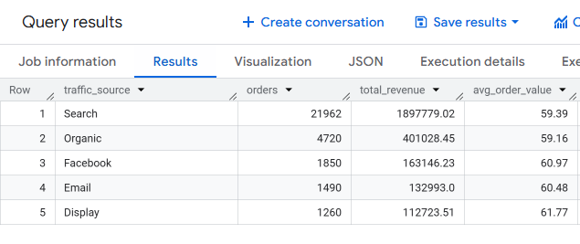
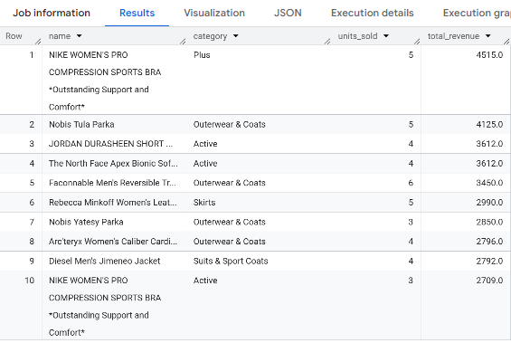
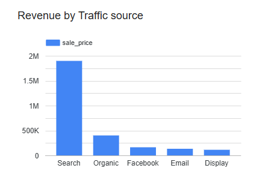
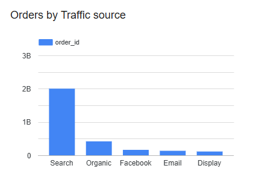

E-Commerce Performance Dashboard
A BigQuery + Looker Studio build designed to answer the questions that actually change spend: channel health, product concentration, and retention opportunities.
Project summary
Tools: BigQuery (SQL) · Looker Studio · thelook_ecommerce public dataset
Project type: Growth analytics · Channel performance · Product intelligence
The problem
Most E-commerce businesses track revenue, but few know where it comes from, which products are driving it, and which channels are underperforming relative to their potential. Without that visibility, budget follows noise, not efficiency.
What I did
Using Google’s public thelook_ecommerce dataset (a fictitious clothing retailer with 21,000+ completed orders),
I wrote SQL queries in BigQuery across orders, users, products, and order items, then built a Looker Studio dashboard to visualize the results.
The three questions:
- Which channels drive the most revenue, and is that healthy?
- Which products generate the most money, and why?
- What does customer spending behavior look like across segments?
Results
Channel Performance
Key insight: Search dominates at 73% of total revenue, but average order value is nearly identical across all channels (\($59 to 62\)). This means the gap isn't in customer quality, it's purely in volume. Email, typically the highest-ROI owned channel in e-commerce, generates only 7% of orders. This signals a major untapped revenue opportunity: investing in CRM and email automation could grow revenue without increasing ad spend.

Product Performance
Key insight: The top revenue products fall into two distinct patterns, high price, low volume (Canada Goose, ~$700/unit) and lower price, high volume (Levi's, ~$290/unit, 12 units sold). Outerwear & Coats accounts for 7 of the top 10 revenue products, creating category concentration risk. A growth strategy would prioritise scaling mid-range volume products via paid channels while protecting premium margin through VIP retention emails.

Artifacts


What I’d do next (if this were live)
- Fix the Email channel: build 5 lifecycle flows (welcome, browse abandon, cart abandon, post-purchase, winback).
- Scale mid-range winners on paid: better ROAS potential than premium low sell-through items.
- Investigate Display: highest AOV but lowest volume. If CPA is reasonable, it can scale.